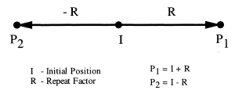

|
The IfcHatchLineDistanceSelect is a selection between different ways to determine the distance and optionally the start point of hatch lines, either by an offset distance measure or by a vector.
The vector, if selected, acts as a one time repeat factor in the fill area style hatching for determining the origin of the repeated hatch line relative to the origin of the previous hatch line, Given the initial position of any hatch line, the one direction repeat factor determines two new positions according to the equation:
NOTE Definition according to ISO 10303-46:
I + k * R k ∈{-1,1}
Figure 333 shows the use of a vector for hatch line distances

Figure 333 — vector as one direction repeat factor
NOTE Use of IfcVector as one time repeat factor is adapted from one_direction_repeat_factor defined in ISO10303-46
HISTORY New select type in IFC2x3
XSD Specification:
<xs:group name="IfcHatchLineDistanceSelect">EXPRESS Specification:
|
 EXPRESS-G diagram
EXPRESS-G diagram Link to this page
Link to this page